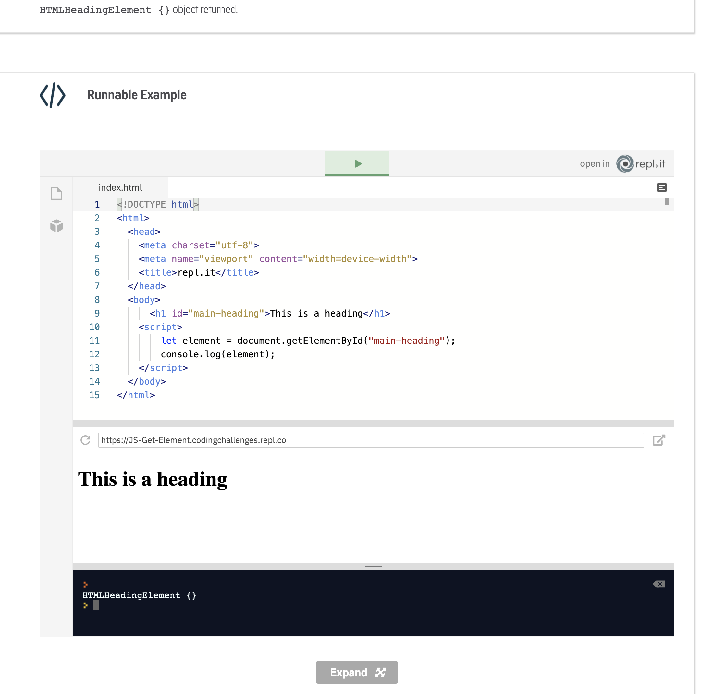
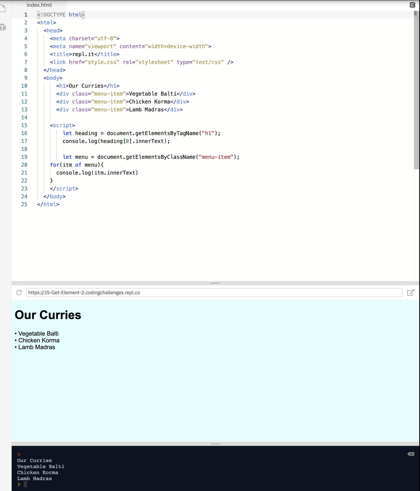
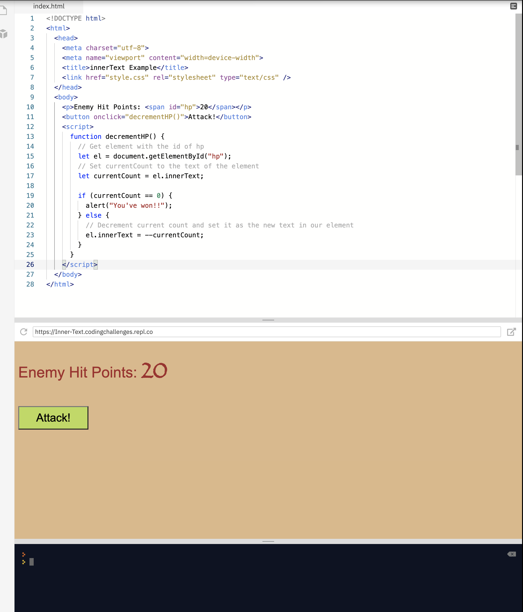
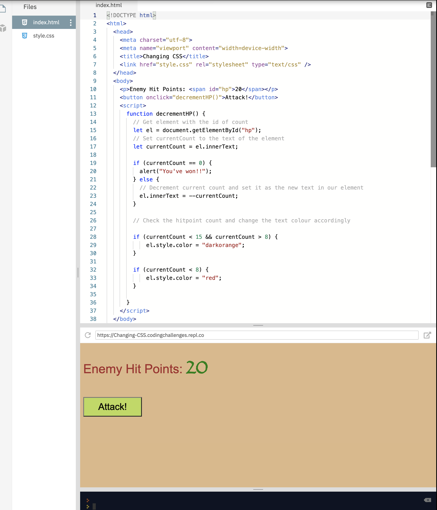
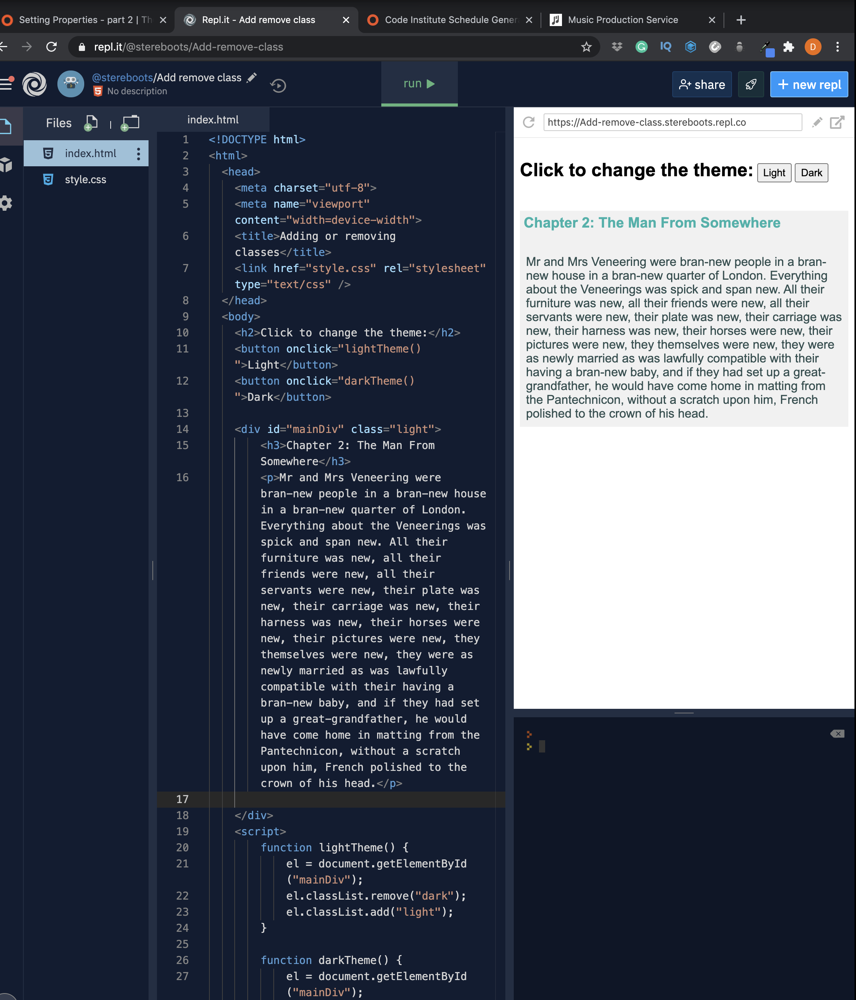
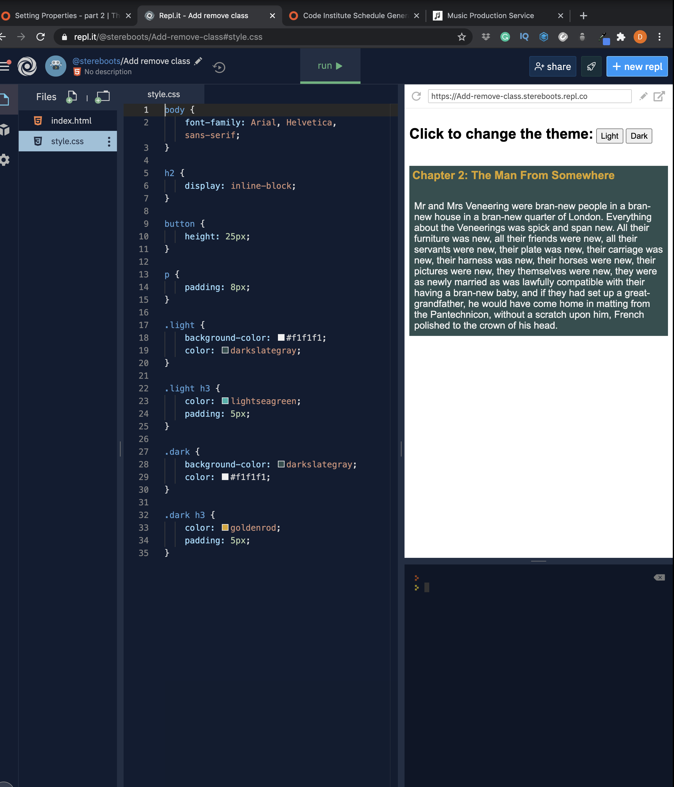
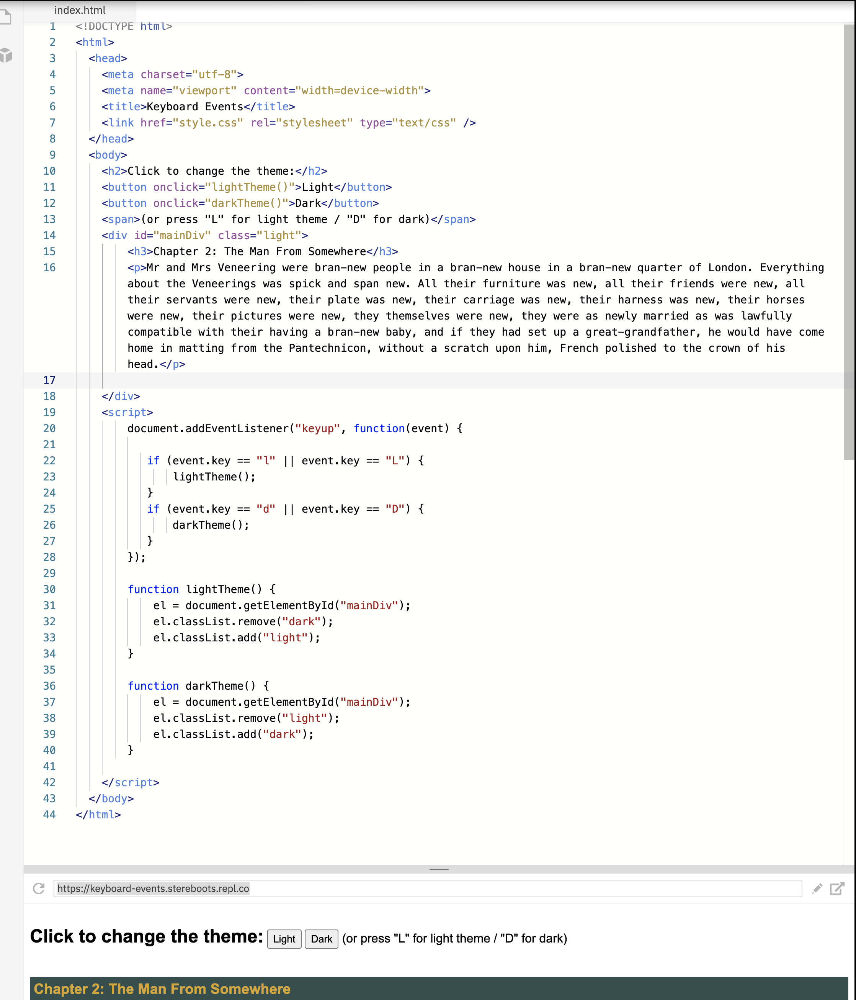

To see the DOM tree for yourself, browse through your browser's Extensions store and see if there is an extension to generate HTML Trees. Here is one for Chrome.
DOM methods
Methods attached to the Document object
Allows us to select and manipulate elements in the DOM
How do you use it? Call the different methods attached to the document object in JavaScript
selecting DOM elements
Now we know how the DOM tree is represented, the next question is: how do we go about selecting and manipulating elements in the DOM? Because the Document is an object, it conveniently has a number of properties and methods attached, which we can use. Remember that a property is something that tells us something. It doesn't have () after its name. A method is something that performs an action or returns a value. It does have the parentheses () after the name and often takes one or more parameters inside the parentheses. We're going to look at three methods of selecting elements. Of the three we will discuss, the first method is by far the most popular. document.getElementById("id-name") - this is the most popular way of returning an element in JavaScript. We call the getElementById method of the document object and supply the id we're looking for as a parameter inside the parentheses. This method then looks for an element with an id that matches "id-name". It either returns the element or a null value if the element cannot be found. In the example below, examine the HTML and JavaScript code. Then, run the code and click on the Console tab. You should see the HTMLHeadingElement {} object returned.
Most popular method
document.getElementById("id-name")

selecting DOM elements
The getElementById()method is by far the most common way of selecting elements using JavaScript, and it is the method we will use for the other units in this lesson. For completeness, though, we want to introduce you to two other methods. These return collections of elements, rather than an individual item.
document.getElementsByClassName("class-name") this method works in a similar manner to getElementsById. It looks for elements with a class name that matches the value passed in the parentheses. If one or more element is found, it returns a collection - called a NodeList - containing the elements. Even if just one element is found, a NodeList will still be returned.
document.getElementsByTagName("tag-name") this method looks for elements with a tag name that matches the value passed in the parentheses. So, if we called the method like this: document.getElementsByTagName("div"), then we would get a NodeList containing all of the The nodes in the NodeList can be accessed by index numbers. The index starts at 0 like in an array. We also can iterate through the collections that these methods return in the same way we would iterate through an array. In the example below, you will be introduced to the innerText property, which returns the text from inside an element. Examine the code, paying attention to the way we're accessing the elements - just like elements in an array. Then, run the code and click on the Console tab. You should see the text of each of the elements returned.
setting properties
properties of objects on the DOM - allows us to retrieve or set properties fo DOM objects
we use it = retrieve or set properties such as
innerText and style
In our previous lesson, we introduced you to the innerText property. When we have retrieved an element, the innerText property will return the text between the tags. This property, though, like many object properties works as a getter and a setter. That means that we can both retrieve and change the data. We used innerText to retrieve data in the previous lesson. To set, or change, data we simply supply an equals sign and a value, like so: document.getElementById("name").innerText = "Arthur Dent" In this example, we target the element with the id of "name" and set the text to "Arthur Dent". In the following example, we have encountered a sleeping troll and decide to attack before he wakes up (bizarrely, he also decides to remain asleep throughout the whole ordeal!) In coding terms, though, we retrieve the text of the element with the id of "hp", decrement it and update the text accordingly.
The innerText property is useful for changing the text content of an element. If we wanted to change or add HTML code instead, then we could use the innerHTML property. Another useful property is the ability to get or set the inline style attribute for an element. We do this by using the style property and then supplying the property name. To change the text colour of our selected element, then, we could write: document.getElementById("name").style.color = "red";. If the CSS property is hyphenated, such as background-color, then we change it to use camel case, so it would be backgroundColor. In our extended example, below, we change the text colour to indicate that things are starting to get critical for our troll.
This isn't the best way of setting CSS, though. It applies the styles by adding a style = attribute, which means that it is adding inline styling. We'll have a look in the next lesson at a better way of applying styles through JavaScript.
setting properties
Before we talk about a different way of setting CSS styles, let's discuss a very cool feature of the DOM. When the DOM is loaded, it will generate properties for every standard attribute. What that means is that, just as we set the style attribute in the previous lesson, we can get or set other attributes in the same way. So, to change the src attribute for an tag, we could write the following code: document.getElementById("myImage").src = "img/newImage.png";. We could also change the href attribute of anchor elements in the same way.
In our example below, we change the src attribute of our
element to switch a light bulb on or off.
You can see the power of JavaScript when it comes to adding interactivity to our projects. As we said, though, setting the style attribute is not the best way of applying styles. You'll remember that we prefer not to create inline styles. Instead, we prefer to add or remove classes. We can do this in JavaScript using the classList.add() and classList.remove() methods. In our example below, we allow the user to decide whether they want a dark or a light theme for viewing our content. We achieve this by adding and removing classes.

We've covered the most common ways to manipulate the DOM using JavaScript. In the final lesson, we'll spend a bit of time discussing DOM events.
 DOM events
events can trigger actions which we can capture and work with
we use the
addEventListener()method
We've already encountered events in HTML. These are actually DOM events, which we can capture and utilise in JavaScript. To act on an event, we have to listen for it. This might be compared to a runner at the start of a race. He or she is poised and listening for the starting pistol or the word, "GO!". When they hear the word, they act on it by starting to run. In a similar way, we can tell JavaScript to listen for certain events. When the event happens, JavaScript will act on it. To do this, we need to add an event listener. You can attach event listeners to elements in HTML, but often they are attached to the entire document. We also need to say what event we are listening for, and what to do when the event occurs. Here is an example of an event that happens when a key is pressed and released: document.addEventListener("keyup", function(event) { alert("You pressed a key!");. We wait for the key to be released and then a function runs, which pops up an alert. Notice the event parameter in our function. This contains the properties of the event, such as the value of the key that was pressed. Here is an example of detecting keypresses. Now, if we press the letter "l" on the keyboard, the light theme will be applied. If we press "d", the dark theme will be applied. You may have to click in the results window for this code to work, because we're running it in repl.it. This won't be necessary in your own production projects.
We could also call an external function, rather than writing it inline as part of the event listener. Let's say that we had the following function function checkKey(event), which checked the key presses for us. To call this function, we'd use the following code when setting up our event listener: document.addEventListener("keyup", checkKey). Notice, we don't supply the parentheses - just the function name. To remove an event listener, we can use the removeEventListener method. To use this method, our function must be external rather than inline. The code to do this for the checkKey example would be: document.removeEventListener("keyup", checkKey). The final listener we want to discuss is for the DOMContentLoaded event. When we load our webpage, it is possible that the JavaScript will load and start executing before the HTML has finished loading. This can result in errors. We can delay our JavaScript from running by telling it to wait until the DOM has finished loading. In our example below, notice that we are loading the script in the head. It will load before the HTML. Within the JavaScript file, we have to use the DOMContentLoaded event to make sure that the code won't run before the DOM has fully loaded. Try running the code. Then, within the JavaScript file, comment out lines 1 and 3 and rerun the code.